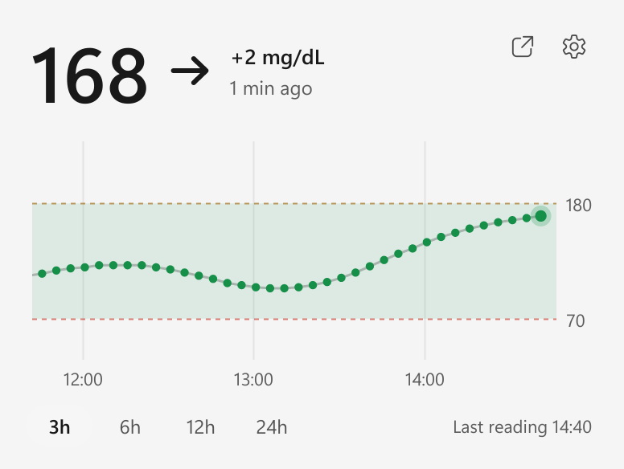
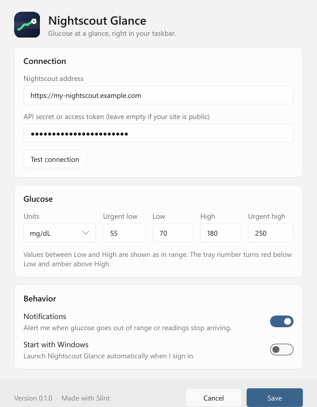

Glucose, right next to the clock.
Nightscout Glance puts the current reading from your Nightscout site into the Windows taskbar as a plain number. Point at it and the last hours appear as a graph. Made by a parent who checks it all day.
Free and open source. Windows 10 and 11: one 9 MB file, no installer. macOS 11 or later: experimental, read this first.


The flyout as it opens above the taskbar. Switch the taskbar to see the number redrawn for it.
The number is the icon
There is no coloured dot to decode. The tray shows the value itself, and it stays readable whichever taskbar you use.
Small on purpose
It does one job and stays out of the way.
- History when you point at it
- Value, trend arrow, change since the last reading, and a graph of the last 3, 6, 12 or 24 hours with your target range.
- Alerts when it matters
- A notification when glucose leaves the target range or readings stop arriving. One switch turns them off.
- Barely there
- One native program using about 4 MB of memory. It wakes up once per expected reading and sleeps the rest of the time.
- mg/dL and mmol/L
- Pick your unit and set your own low, high and urgent thresholds.
- Private
- It talks only to your Nightscout site. No account, no telemetry. Your API secret is stored encrypted on your computer.
- Open source
- MIT licensed and written in Rust. Read it, build it, change it.
Running in a minute
There is nothing to install.
- Download and runPut
NightscoutGlance.exeanywhere and start it. - Enter your Nightscout addressAdd an API secret or a read-only access token if your site is not public, then test the connection.
- Pin the numberWindows hides new tray icons behind the ^ arrow. Drag the number onto the taskbar so it stays in view.
On a Mac the value and trend arrow appear as text in the menu bar. This version is new and not yet notarized by Apple, so macOS blocks it on first launch. Unzip it, move it to Applications, then run this once in Terminal: xattr -dr com.apple.quarantine "/Applications/Nightscout Glance.app"

